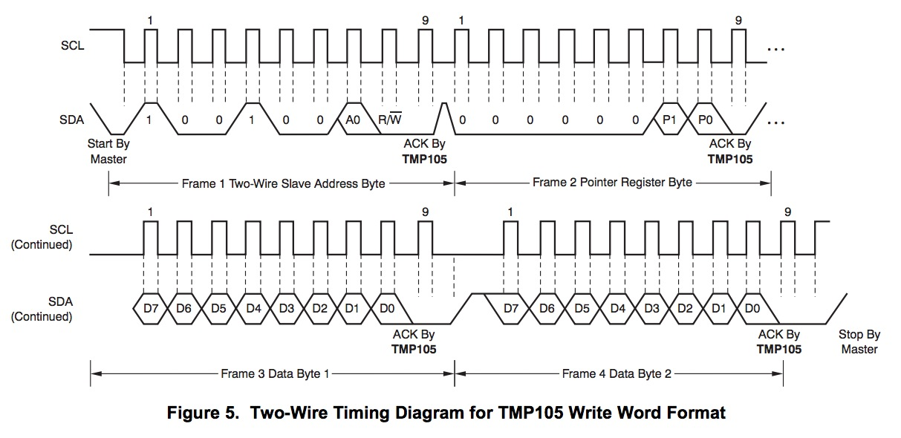
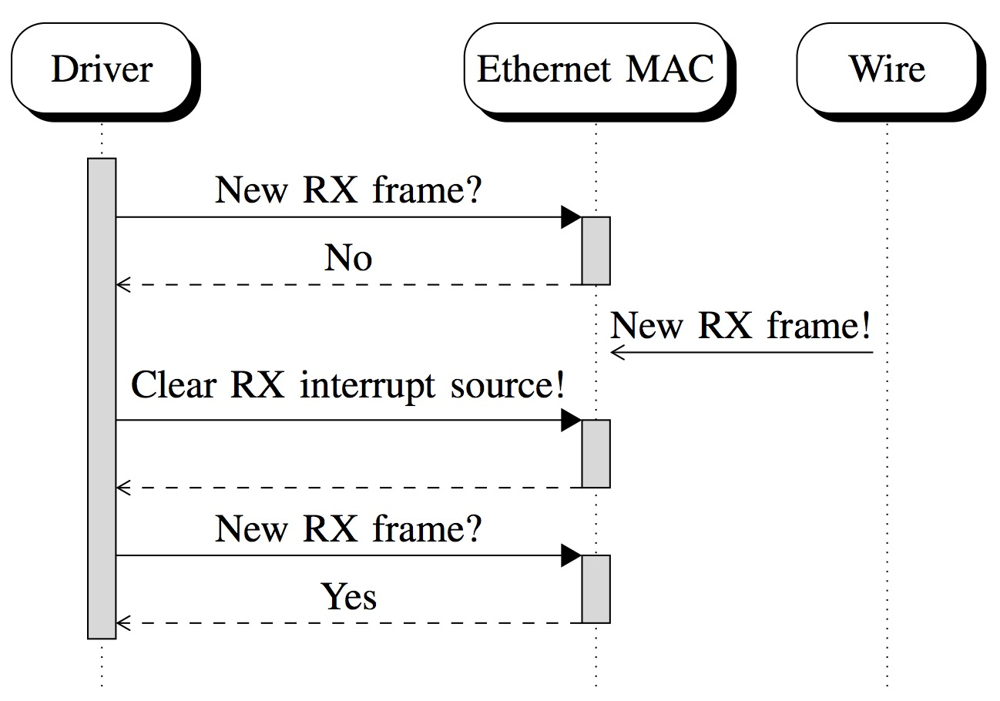

Formal Co-Validation of Low-Level Hardware/Software Interfaces
Alex Horn,
Michael Tautschnig,
Celina Val,
Lihao Liang,
Tom Melham,
Jim Grundy,
Daniel Kroening
Emerging Challenges
Microelectronics industry:
- Proliferation of on-chip micro-controllers
- More semiconductor designs rely on firmware
- Co-design of hardware alongside embedded, low-level software
These trends are driven by market competition and engineering advantages:
- Extracting complex control to firmware adds flexibility and survivability of products
- Shifting work to micro-controllers can increase scalability
Firmware is not just exciting; it is also worrying.
Emerging Challenges
Microelectronics industry concerns:
- Team boundaries with sharp educational and skill differences
- Scope of misunderstandings is greater than usual
- Heterogeneous system with technological gaps
- Different languages are processed by different tool chains
- Nonstandard hardware-specific I/O primitives and concurrency semantics
- Memory-mapped I/O, special-purpose registers, interrupts etc.
Emerging Challenges - Automated Verification
At FMCAD, audience's interests and priorities vary.
Cannot ignore hardware/software interfaces:
- Too many false alarms due to nondeterminism
- Too few bugs (unsoundness) due to side effects
Research opportunities:
- I/O is subject to hardware-specific protocol rules (particularly important for new projects)
- Hardware (physical world) is common source of concurrency
- But what are technical details of the problems?
- …
Paper
Show the challenges and feasibility of semi-automatically finding bugs in the
interactions at hardware/software interfaces before a cycle-accurate model
of the hardware is available
Three realistic, publicly available benchmarks:
- RTC-MC146818 (real-time clock)
- TMP105 (I²C temperature sensor)
- ETHOC (Open Cores Ethernet MAC)
Approach - Diagram Descriptions
Hardware models as pre-silicon abstractions:
- Extract executable device models from a virtual machine emulator (QEMU)
- Ignore QOM and QDev trees
- Extract relevant low-level code from a monolithic OS (Linux kernel) (o-r)
- Specify hardware-specific I/O rules as C runtime assertions according to data sheets
- Use symbolic execution to construct a quantifier-free formula that encodes the strongest postcondition for multiple execution paths up to a certain depth
- Encode concurrency as partial orders
- Automatically find bugs with SAT/SMT solver
TMP105: An I²C Temperature Sensor
TMP105 Registers
TMP105 Write Protocol over I²C Bus

TMP105 Characteristics
Things to think about:
- There are four external registers of different sizes.
- Most are readable and writable (rw), but at least one is read-only.
- However, at least one bit of a rw-register is write-only.
- Temperature measurements can be continuous or not (shutdown mode).
- …
TMP105 Properties
Encode properties as runtime assertions in executable hardware model:
-
At most two bytes can be read or written of the temperature threshold registers.
-
Exactly one configuration byte can be read or written.
-
Each read of the temperature register is preceded by a write of
a 1 to the MSB of the configuration register if and only if its
LSB is a 1 (i.e. shutdown mode).
-
But when the MSB of the configuration register is read, it is zero
regardless of any previous writes to it.
Hardware/Software Interface Bug Bounty
RTC and I²C benchmarks use sequential symbolic execution:
ETHOC: An Open Cores Ethernet MAC
ETHOC Architecture
ETHOC Characteristics
Things to think about:
- Incoming Ethernet frames (RX) arrive continuously.
- An adequate model of concurrency is important.
- Software and hardware communicate through DMA buffer descriptors.
- Driver supports polling and interrupt mode.
- Hardware always sets interrupt status flags.
- Thus, interrupt sources must be cleared before switching to interrupt mode.
- Otherwise, when RX interrupt source is re-enabled, a spurious interrupt could occur.
- …
Code is good exemplar for concurrency bugs due to interrupts in producer-consumer cases.
ETHOC RX Bug (Polling -> Interrupt Switch)
ETHOC RX Bug Fix (Polling -> Interrupt Switch)

We found the fix in the Linux 2.6.38 kernel release.
ETHOC Properties
Expose concurrency bug:
-
When the software enables the MAC receiver, there exists at least one empty RX buffer descriptor.
-
The software must eventually process every RX frame. At the very latest, when it is stopped, all RX frames must have been processed.
Limitations
-
Manual extraction and slicing
-
No support for nested interrupts
-
Often prohibitively large partial order concurrency encoding (20+ GiB)
Concluding Remarks
New approach to co-validation of properties at the hardware/software boundary:
-
Formal symbolic co-execution of an executable hardware model and low-level software
-
Experiments adapt approach to a range of hardware/software interaction mechanisms
-
Exposed real bugs
Experimental research:
-
Identified a rich (openly available) source of typical hardware models
-
Combine these with real world low-level code from Linux drivers
-
Narrowed the gap between engineering and science concerning firmware validation
-
Retain essential characteristics of production code
-
Facilitates collaboration with the systems community whose insights are important
-
Pave a way for more thorough problem analysis and systematic experiments